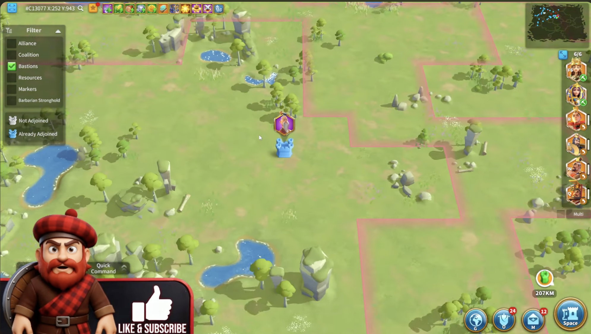
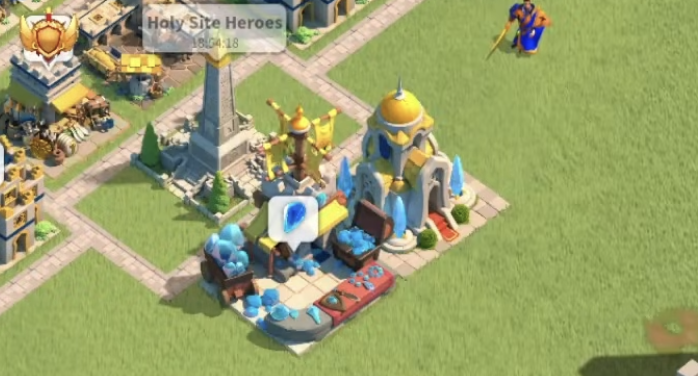

Starting from KvK 4, players will encounter several new features. Some depend on the KvK story, while others are available in every KvK.
Two of these features are Bastions and Crystal Technology. Both are available in every KvK, regardless of the story.
What are Bastions?
Bastions are special buildings that appear on the KvK map.

What is Crystal Technology?
Crystal Technology is a research system that provides powerful buffs to your marches.
This system also introduces two new buildings to your city:
- Crystal Mine: Produces crystals.
- Crystal Research Center: Allows you to research Crystal Technology.

Although Bastions and Crystal Technology are connected, I will explain each feature separately to make them easier to understand.
Read the Bastions GuideRead the Crystal Technology Guide